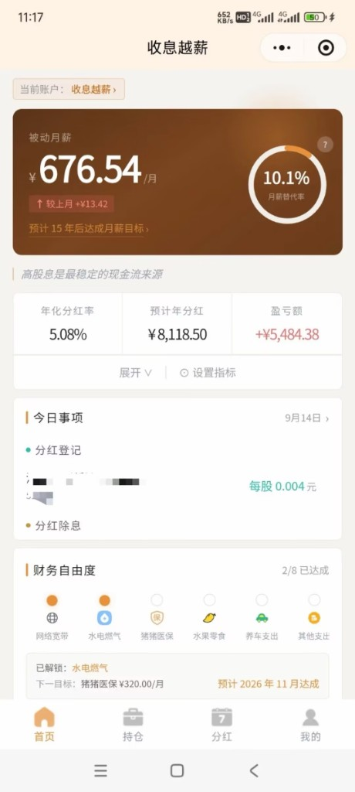

把"收益率"翻译成"月薪"：一个小程序如何用生活化指标、账单里程碑与分红日历，让"攒股收息"变成可持续的日常习惯。
调研目标：识别截图产品的归属，拆解其首页的完整产品设计模块，并从"提升基金投顾 App 交易转化率与转化金额"的角度提炼可借鉴与需规避之处。
竞品范围：主竞品「收息越薪」；参照组：股息罐罐、财迹、FIRE记账、食息指南（倍发科技）、Pulse 股息追踪（海外）。

产品名称：收息越薪（微信小程序）。截图顶部为标准小程序胶囊按钮，可确认形态为小程序而非独立 App（EV-001）。
开发主体：公开可检索到的仅有第三方小程序商店 weweplay 的收录页（工具分类，评分 4.0，0 条评价），介绍原文为："收息越薪是一个记录攒股收息的小程序，购买稳定高分红的股票、红利基金等构建自己的收息持仓，小程序计算每年分红、每月分红金额，最终目标是每个月的被动分红（小程序把这个取名为被动月薪）超过自己的主业月薪……"（EV-002）。未检索到公司官网、公众号、开发者署名或媒体报道；结合无 UGC、无评价、纯工具属性，判断为个人/独立开发者作品。待验证：可在微信内打开小程序 → 右上角"…" → 查看"账号主体"确认。
所处赛道："收息佬"工具。新浪财经 2026-09-21 报道：低利率环境下年轻人从"攒利息"转向"攒股息"，晒分红到账截图、订"股息覆盖奶茶钱 / 水电费"的小目标、整理"分红日历"，相比晒收益曲线更愿意晒现金流（EV-003）。「收息越薪」几乎是把这篇报道里的用户行为逐条产品化。
同类工具：股息罐罐（iOS + 小程序 + H5，AI 截图导入持仓、收息日历、FIRE 进度、17 项指标自定义、红利税明细，EV-004）、财迹（股息跟踪 + 现金流报告 + 目标进度，EV-005）、FIRE记账（分红日自动入账现金账户，EV-006）、食息指南（倍发科技，把红利指数/月月分红 ETF/场外基金与银行存款利息放在同一比较框架，EV-007）、Pulse（海外，"每个数字可点开看公式与假设"的透明层，EV-008）。
注：以上为按屏幕数字反推的近似值，用于理解产品口径，非该产品披露数据。
| 模块 | 截图中的观察 | 设计意图（我们的解读） | 对投顾 App 的启发 |
|---|---|---|---|
| ① 账户切换条 | "当前账户：收息越薪 >"，位于首屏顶部 | 支持多账本（如本人/家人/不同券商），账户是一等对象 | 家庭视角、多账户汇总是高净值/家庭客户的真实需求；我们已有家庭财务规划报告，可考虑在 App 端呈现家庭现金流汇总 |
| ② 主视觉卡（铜金色） | 大字"被动月薪 ¥676.54/月"；小字"↑ 较上月 +¥13.42"；链接"预计 15 年后达成月薪目标 >"；右侧环形仪表"10.1% 月薪替代率"，带 ? 说明 | 把资产收益重新表述为"工资"，用替代率（借自养老金替代率概念）做进度，给出可达成的时间点；月度对比而非日度 | 最核心的可借鉴点。把"收益率"翻译为用户能感知的生活单位；替代率与我们的养老规划天然同源；"预计 N 年后达成"是加投/定投转化的最佳前置话术 |
| ③ 口号条 | "高股息是最稳定的现金流来源" | 价值观灌输，强化"收息"信仰 | ⚠️ 需规避 绝对化表述。持牌机构需改为"分红是现金流的来源之一，不代表收益承诺"等可验证表述 |
| ④ 三指标条 | 年化分红率 5.08% ｜ 预计年分红 ¥8,118.50 ｜ 盈亏额 +¥5,484.38；下方"展开 ∨""⚙ 设置指标" | 把"盈亏"降级为第三位且可折叠；指标可自定义 | 对稳钱/红利类策略可考虑"分红率 / 预计年分红 / 盈亏"的排序；指标自定义优先级较低，但"折叠盈亏"值得 A/B |
| ⑤ 今日事项 | "9 月 14 日 >"；绿点"分红登记：XX 每股 0.004 元"；黄点"分红除息" | 用分红日历事件制造每日打开理由，替代行情推送 | 我们有产品分红公告数据源，可直接生成"你持有的 XX 今日权益登记 / 除息 / 到账"，并接顾问陪伴话术 |
| ⑥ 财务自由度 | "2/8 已达成"；八个图标：网络宽带●、水电燃气●、猪猪医保○、水果零食○、养车支出○、其他支出○……；"已解锁：水电燃气"；"下一目标：猪猪医保 ¥320.00/月"；"预计 2026 年 11 月达成" | 把大目标拆为小额、可命名、可预期的账单里程碑（名称可自定义，如"猪猪医保"），每次解锁都是一次成就感，且给出 ETA 日期 | 第二核心借鉴点。与"长期持有"完全同向的游戏化；每一级里程碑都是"再多投一点就能提前解锁"的自然转化场景 |
| ⑦ 底部 Tab | 首页 ｜ 持仓 ｜ 分红 ｜ 我的 | "分红"是一级导航，与"持仓"平级 | 对于分红型/现金流型产品，"分红/现金流"可以是一级页签或持仓页一级视图 |
| ⑧ 视觉语言 | 铜金/棕色渐变主卡，米白背景，无红绿涨跌色 | "钱币/现金"意象，刻意远离股票软件的红绿 | 现金流视图可采用与行情页不同的暖色体系，视觉上区隔"看涨跌"与"看现金流"两种心智 |
| 竞品 | 调研模块 | 核心亮点 | 转化相关设计 | 证据 | 可借鉴性 |
|---|---|---|---|---|---|
| 收息越薪 | 首页主卡 | 被动月薪 / 月薪替代率 / 达成年限 | "预计 15 年后达成"隐含加投变量，可导向加仓 | EV-001 | ✅ 可借鉴 |
| 收息越薪 | 财务自由度 | 8 级生活账单里程碑 + 下一目标金额 + ETA 日期 | 每级解锁都是"再投一点"的自然场景 | EV-001 | ✅ 可借鉴 |
| 收息越薪 | 今日事项 | 分红登记 / 除息事件日历 | 非行情驱动的打开理由；分红到账可引导再投入 | EV-001 | ✅ 可借鉴 |
| 收息越薪 | 指标条 / 口号 | 盈亏降级可折叠；"最稳定"口号 | 弱化波动；但口号绝对化 | EV-001 | ✅ 折叠盈亏 ⚠️ 口号需规避 |
| 收息越薪 | 数据录入 | 手工记账（描述为"记录"类小程序） | 录入成本高，留存依赖用户自律 | EV-002 | ⚠️ 需规避（我们有真实持仓） |
| 股息罐罐 | 持仓账本 / 收息日历 / 主页 | AI 截图导入；12 个月现金流柱图；FIRE 进度（被动收入覆盖月支出）；17 项指标自定义；红利税明细 | 降低录入门槛；覆盖率进度条 | EV-004 | ✅ 现金流柱图、税费明细 |
| 财迹 | 股息跟踪 / 目标 | 逐股票"对被动收入的贡献"；现金流报告；目标进度与提醒 | 贡献度可导向"补哪只" | EV-005 | ✅ 贡献度视图 |
| FIRE记账 | 分红入账 | 分红日自动入账现金账户，打通资产与现金 | 分红到账即再配置时点 | EV-006 | ✅ 到账即引导 |
| 食息指南（倍发） | 收益对比 | 红利指数 / 月月分红 ETF / 场外基金 vs 银行存款利息同框比较，并明确"不能等同实际到手收益" | 用存款利息做收益锚点，降低决策门槛 | EV-007 | ✅ 收益锚点 + 免责写法 |
| Pulse（海外） | 信任层 | 任何指标可点开看精确公式、变量与假设 | 透明度建立信任，减少"为什么少了"的客诉 | EV-008 | ✅ 强烈建议 |
首屏不是收益率，而是"被动月薪 ¥676.54/月"+"月薪替代率 10.1%"。同一笔约 16 万的持仓，若显示"+3.5%"是一个平庸数字；显示"每月多发 676 元工资、已覆盖 10% 的月薪"则是一个有进度感的故事。
证据：EV-001 转化影响：降低"浮盈不多→无感→流失"的概率；替代率给出了加投的明确理由。
"猪猪医保"这类命名说明账单项由用户自定义。目标被具象为"这笔分红已经替我交了水电燃气"，成就感来自生活而非 K 线。8 级阶梯保证在很长时间里总有"下一个可达成的小目标"。
证据：EV-001 转化影响："下一目标 ¥320/月，预计 2026 年 11 月"本身就是一句促加投文案。
"今日事项"只放分红登记/除息事件。用户打开 App 的诱因从"今天涨跌多少"变成"今天有没有分红"，与长期持有行为同向，也天然低频、低焦虑。
证据：EV-001 EV-003 转化影响：分红到账日是再投入意愿最强的时刻（FIRE记账、财迹均围绕此设计，EV-005 EV-006）。
"盈亏额"是三指标中的最后一项且可折叠；主卡对比口径为"较上月"。这是刻意的信息架构选择：让用户少看波动。
证据：EV-001 转化影响：减少因日度回撤触发的恐慌赎回，对稳钱/红利类持仓尤其有效。
"高股息是最稳定的现金流来源"是绝对化表述；"预计年分红"按历史分红率线性外推，未提示分红可变、可能贴息、需扣红利税。海外与港台的红利投资讨论都反复强调应看总回报、配息来源与税费（EV-003 相关趋势报道亦提示风险）。
证据：EV-001 影响：持牌机构若照搬，触碰《金融产品网络营销管理办法》对收益暗示/绝对化用语的限制；建议采用食息指南式的免责写法（EV-007）与 Pulse 式的公式透明层（EV-008）。
该小程序只记账、不交易，用户需要手工录入持仓与分红。它把"想法"做到了极致，却没有"下一步"。这正是投顾机构的结构性优势：我们有真实持仓、分红公告和交易能力，可以把同一套叙事直接接到定投/加投/再投入。
证据：EV-002 影响：借鉴其"叙事层"，用我们的"数据层 + 交易层"补全闭环。
把年化现金流换算为"每月 X 元"，再与用户自报的月薪 / 月支出 / 某项账单对比得到"覆盖率"。适用：红利/分红型策略持仓页、养老账户、稳钱账户。预期效果：提高持仓页停留与加投点击。
来源：EV-001 EV-004
用户勾选/自定义 6–8 项固定支出并排序，系统按预计月现金流逐级"解锁"，展示下一目标金额与预计达成月份。适用：长期目标账户、定投计划。预期效果：把"继续投"变成"解锁下一项"。
来源：EV-001
在"预计 N 年后达成"旁放滑杆："每月多定投 500 元 → 提前 X 年"。这是从叙事到交易最短的一步；收息越薪只给了链接（EV-001），我们可以直接给出定投开通按钮。
来源：EV-001（延伸）
权益登记日、除息日、到账日三类事件生成"今日事项"；到账当天推送顾问话术并提供"一键再投入"。适用：所有有分红的策略/基金。
来源：EV-001 EV-005 EV-006
对稳钱/红利类持仓，默认口径"较上月"，日度涨跌折叠；盈亏排在现金流指标之后。适用：稳钱、红利、养老类页面。
来源：EV-001
每个现金流指标可点开查看"数据来源 / 计算公式 / 假设（历史分红不代表未来）"；并可与同期银行存款利息同框对照但明确"口径不同、不可等同实际到手"。适用：所有预测型数字。
来源：EV-007 EV-008
| 优先级 | 建议 | 对应发现/模式 | 预期转化指标（假设，待验证） | 实施难度 |
|---|---|---|---|---|
| 高 | 持仓页新增"现金流视图"：预计年分红、被动月现金流、12 个月分红柱图、分红事件日历。先覆盖红利/分红型策略与月月分红类基金持有人。 | 发现 1/3；模式 A/D | 该人群持仓页→加仓/定投开通率 +10%～20% | 中（需分红公告数据接入与口径核对） |
| 高 | "生活账单覆盖"目标阶梯 + "再投多少可提前多久"模拟器，末端直接挂定投开通/加投按钮。 | 发现 2；模式 B/C | 模拟器曝光→定投开通转化 3%～5%；定投客单提升 | 中 |
| 中 | 分红到账 / 权益登记日纳入顾问工作台"关键时刻"，自动生成陪伴话术 + 一键再投入。 | 发现 3；模式 D | 分红到账 7 日内再投入率 +5～10 个百分点 | 低（已有关键时刻框架） |
| 中 | 稳钱/红利类策略持仓卡默认"较上月"口径，日度涨跌折叠；盈亏后置。 | 发现 4；模式 E | 回撤期赎回率下降；无效打开减少 | 低（A/B 即可） |
| 中 | 养老规划中的"替代率"与现金流视图统一口径，把"被动月现金流"接入养老账户仪表盘。 | 发现 1 | 养老账户加投率 | 低（已有养老仪表盘） |
| 低 | 所有预测数字加"公式透明层"；可选"与同期定存利息对照"，附口径免责。 | 发现 5；模式 F | 相关客诉下降；信任度 | 低 |
| 低 | 首页指标自定义、家庭/多账户现金流汇总。 | 模块 ①④ | 高净值家庭客户留存 | 高 |
| 实验 | 分组 | 核心指标 | 周期 | 成功标准 |
|---|---|---|---|---|
| A｜现金流视图 | 红利/分红型持有人 50/50：持仓页默认收益视图 vs 默认现金流视图 | 持仓页→加仓/定投点击率；7 日加投金额；页面停留 | 4 周（覆盖至少 1 个分红周期） | 加仓/定投点击率相对提升 ≥10%，赎回率不升 |
| B｜账单阶梯 + 模拟器 | 现金流视图内：有阶梯与模拟器 vs 无 | 模拟器互动率；定投开通率；定投月供金额 | 6 周 | 定投开通率 ≥3%，月供中位数不低于基线 |
| C｜分红到账陪伴 | 分红到账用户：推送 + 一键再投 vs 仅到账通知 | 7 日再投入率；再投入金额；投诉率 | 2 个分红周期 | 再投入率提升 ≥5 个百分点，投诉率不升 |
| D｜波动降级口径 | 稳钱/红利持仓卡："较上月" vs "今日涨跌" | 回撤期赎回率；打开频次；NPS | 8 周并覆盖一次 ≥3% 回撤 | 回撤期赎回率下降，NPS 不降 |
| 编号 | 来源 | 描述 | 关联发现 |
|---|---|---|---|
| EV-001 | 用户提供截图，发布版随页文件 cover.jpg | 收息越薪首页：被动月薪 ¥676.54/月、较上月 +¥13.42、月薪替代率 10.1%、预计 15 年后达成；年化分红率 5.08%、预计年分红 ¥8,118.50、盈亏 +¥5,484.38；今日事项（9 月 14 日）分红登记 每股 0.004 元 / 分红除息；财务自由度 2/8（网络宽带、水电燃气、猪猪医保、水果零食、养车支出、其他支出…），下一目标 猪猪医保 ¥320.00/月、预计 2026 年 11 月达成；Tab：首页/持仓/分红/我的 | 1–6 |
| EV-002 | weweplay 小程序商店 · 收息越薪 | 第三方收录页：工具分类、评分 4.0、0 条评价；产品自述"记录攒股收息……被动月薪超过主业月薪"。未披露开发主体 | 产品归属、发现 6 |
| EV-003 | 新浪财经 2026-09-21《低利率环境年轻人重新当起"收息佬"》 | 年轻人从攒利息转向攒股息；订"股息覆盖奶茶钱/水电费"小目标；整理分红日历；更愿晒现金流而非收益曲线；"四份钱"收息矩阵 | 赛道背景、发现 3/5 |
| EV-004 | 股息罐罐（App Store 信息聚合页） | 持仓账本（A/B/港/美/ETF/场外基金）、AI 截图导入、收息日历 12 个月柱图、年度派息预测、红利税明细、FIRE 进度、17 项指标自定义、iOS+小程序+H5 | 对标、模式 A/F |
| EV-005 | 财迹-股息跟踪·被动收入·资产记账 | 预计年收入、逐股票对被动收入贡献、现金流报告、目标进度与提醒、截图导入 | 对标、模式 D |
| EV-006 | FIRE记账 应用介绍 | 股票分红日自动入账现金账户；负债、工资、定期收支管理 | 模式 D |
| EV-007 | 倍发科技 · 食息指南 | 红利指数 / 月月分红 ETF / 场外基金与银行存款利息同框比较；FAQ 明确"不能直接等同实际到手收益" | 模式 F、合规写法 |
| EV-008 | Pulse 股息追踪（App Store） | 逐月预测收入图、红利日历、月收入目标进度；"轻点任何指标即可查看公式、变量和假设" | 模式 F |